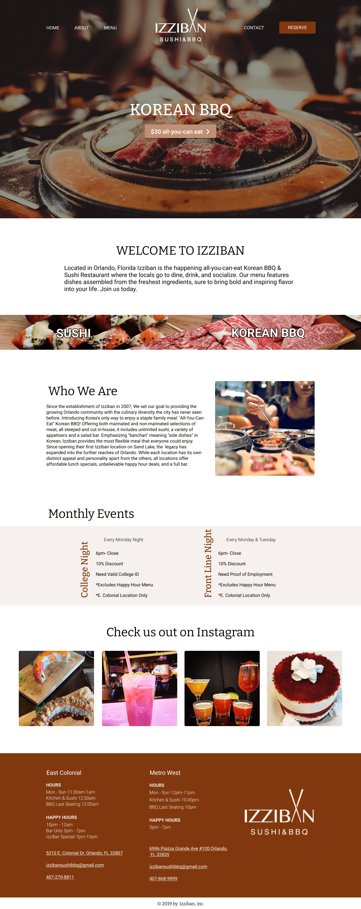
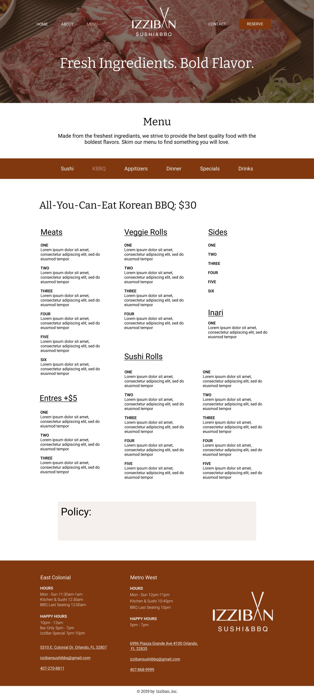

Iziban Sushi: Website Redesign Concept
Iziban Sushi is a popular resturaunt in Orlando, Fl. They are most known for their Korean BBQ and Happy Hour Drinks. I was given the task to recreate their home and menu page for my Web Design class. During the recreation process, I wanted to keep things modern and clean but also bring out an evelated and warm tone to the site that wasn't there in their orignal design. The orignal site needed a strong hero and a CTA added.
Services
- Website Redesign
Skills
- Figma
- Brand Research

